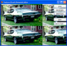
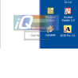
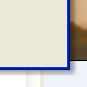
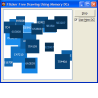
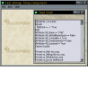
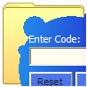
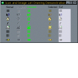
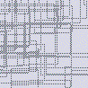
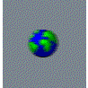
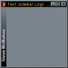

High Resolution Multimedia Timer
High Resolution Multimedia Timer
 Subclassing and Hooking with Machine Code Thunks
Subclassing and Hooking with Machine Code Thunks

Graphics and GDI Index
|  | Drawing With TexturesThis article provides an extension to the technique demonstrated in Creating Single Pixel Dotted Lines to show how you can easily create a brush for drawing shapes from any bitmap, picture or device context. Last Updated: 28 March 2003 |
|  | Fading Out Selected Areas Using UpdatedLayeredWindowIn Windows 2000 and XP, when you click a Start Menu item, such as "Run" an after image of the item you've clicked remains on screen and fades out whilst the Run box starts up. This article provides a reusable form-class you can use to provide this effect in your application. Last Updated: 3 February 2003 |
|  | Creating Drop-ShadowsDemonstrates how to create drop-shadows for windows and controls using the same technique used by Office XP/VS.NET CommandBars. Last Updated: 3 February 2003 |
|  | Flicker Free API DrawingVB offers a way to reduce flicker when drawing a control through its AutoRedraw property. When AutoRedraw is set, VB creates an Off-Screen buffer to draw into, and only transfers this to the drawing surface when the Refresh method is called. Whilst this works well (ish), it doesn't help if you need to draw graphics into some other drawing surface, particularly ones passed to you by the Windows API. This article provides a simple class which allows you to create an Off-Screen buffer you can use for any drawing purposes. Last Updated: 8 January 2003 |
|  | Tiling Bitmaps into Controls, Forms and MDI Form backgroundsThis article provides a bitmap tiling component which allows you to:
Last Updated: 7 January 2003 |
|  | Changing Window ShapesA window that's star-shaped, circular or tank-shaped Creating Window Shapes from Bitmaps Last Updated: 7 January 2003 |
|  | Draw disabled, colourised and dithered icons with the DrawState GDI functionThis sample demonstrates how simple it is to draw disabled, colourised, selected and dithered icons from Image Lists. The VB Image List provides a method to draw an item selected, but doesn't give you very much flexibility from there. Last Updated: 25 November 2002 |
|  | Creating Single Pixel Dotted LinesOne of the drawing features which makes many of the Windows controls draw attractively is the use of single pixel on-off dotted lines. For example, the TreeView control uses these to draw lines, and they are often used in bounding box selections and drag and drop operations. Unfortunately VB doesn't have any built in methods to draw single pixel dotted lines (although you could use, erm, PSet to draw the dots, as long as you didn't mind waiting for a couple of days whilst VB completed drawing the line). This is because Windows doesn't provide a Pens which draw in this style either, and VB's line drawing support exclusively uses the Pen features provided by GDI. So how do the controls draw dotted lines? Last Updated: 1 July 1999 |
|  | Animated Cursors in VBNice feature in Office - you can set it to show customised animated cursors. For example, when Office is opening a document the cursor switches to an animation of a yellow handbag throwing up a small piece of paper (I think that's what it is, anyway). It would be nice to do it this in VB too, yes? Well, as ever with graphics support in VB, you can't do it with the standard methods. The bizarre MouseIcon property lets you set a custom cursor, but this is yet another low quality workaround for the limitations of the Picture object and so it doesn't work with colour or animated cursors. But with the aid of a few hardcore hacks you can make VB show cool animated cursors. A rather dismal collection of animated cursors is included with the sample, you can get more from the Animated Cursor section of the Graphics Library. Last Updated: 1 July 1999 |
|  | Text At Any AngleVB doesn't provide you with any method to change the angle text is written out at on a Form or PictureBox. This seems to be a curious oversight of the OLE StdFont object, because it is in fact very simple to create a font with angles other than horizontal. This article shows you how to do it. The source code provides a class which creates a side logo bar like the one shown in the picture above, additionally demonstrating a method of drawing gradients which run between any two colours. Last Updated: 21 March 1999 |